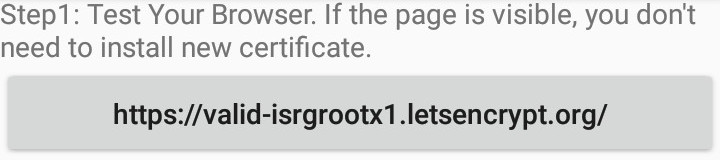
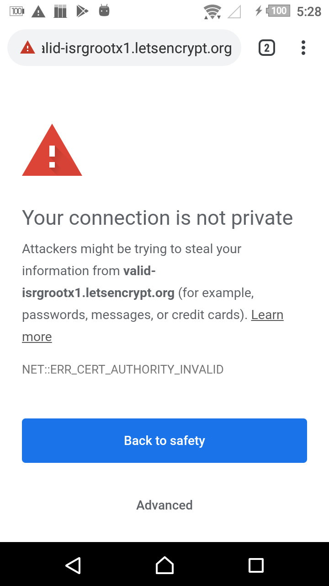
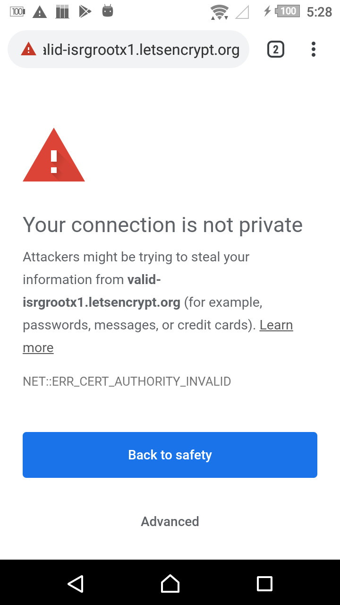
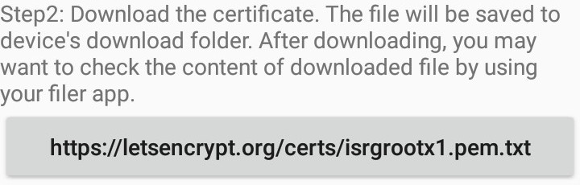
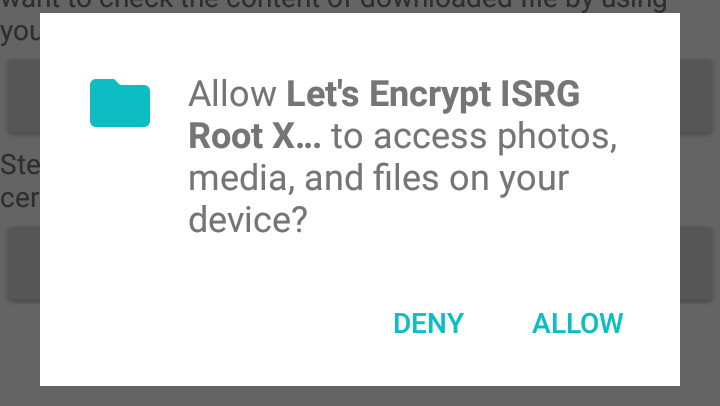
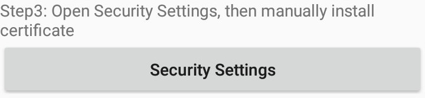

Notice: you can do all step without this app.
Download app APK file ISRGRootX1Installer--1-1.0-20200917_182601.apk
when you start the app. this screen will be shown.

Tap the step 1 button.
If you can see test site correctly, you don't need to install new certificate. You can close this app.
Else if your device has no ISRG Root X1, the browser will show error.
 

Tap the step 2 button.
This step will download the certificate, You have to grant storage permission for this app.
When download complete, the notification will be shown.

(optional) Please don't trust me. You may want to check the content of certificate file that might same to official site.

Tap the step 3 button.
Device's Security Setting will be open. choose "Credential storage / Install from devide memory/SD card".

File picker will be open. !!Don't choose "Downloads"!! open "Internal storage".

Then choose "Download" , choose "isrgrootx1.pem".

Enter the name of certificate. Any name that can be distinguished from other certificates is OK.

back to this app using back button, then tap step 1 button again.
If certificate is installed successfully, You can see the test site.